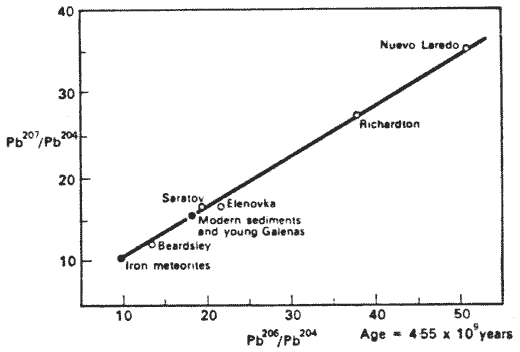

Outros Links:
|
Conteúdo:
- Informações gerais sobre o Grand Canyon
- Alegações do ICR
- Antecedentes sobre as alegações do ICR e isócronos
- Críticas às alegações do ICR
- Resumo
- Resposta às Críticas
- Referências
Informações gerais sobre o Grand Canyon
O Grand Canyon parece algo assim:
Há várias correntes de lava no platô em que o cânion foi cortado (amarelo na Figura 1, acima). Essas correntes de lava são do Cenozoico e algumas delas transbordam para o cânion. As paredes do cânion são majoritariamente cortadas em camadas horizontais de rochas do Paleozoico (verde na Figura 1, acima). Há uma discordância angular na base das camadas do Paleozoico. Uma discordância angular é o resultado do inclinar e erodir das camadas inferiores antes que as superiores sejam depositadas. Essas camadas inclinadas e erodidas são do Precambriano (azul na Figura 1, acima).
As relações geológicas das várias formações são bastante claras. Os fluxos de lava que transbordam para o cânion devem ser mais jovens que o cânion. O cânion deve ser mais jovem que as camadas rochosas que ele corta. Os sedimentos acima da discordância angular devem ser mais jovens que os sedimentos abaixo dela.
A ordem dos eventos que resultaram na Figura 1 deve ser:
|
Até mesmo os criacionistas da Terra jovem concordariam com esta relativa sequência de eventos. Eles argumentariam por uma escala de tempo absoluta muito mais curta do que a aceita pelos geólogos mainstream, mas a sequência relativa é concordada por todas as partes.
Alegações do ICR
O Dr. Steven Austin, presidente do Departamento de Geologia no Instituto de Pesquisa Criacionista, alegou (1992) que havia derivado uma isócrona Rb/Sr para os fluxos da plataforma, o que indica uma idade de aproximadamente 1,3 bilhão de anos.
Uma camada específica do Pré-Cambriano conhecida como o Basalto de Cardenas foi datada por métodos radiométricos para ter cerca de 1,1 bilhão de anos de idade. Os fluxos do Cenozoico amostrados pelo ICR são, portanto, alegados para produzir uma idade que é cerca de 200 milhões de anos mais antiga que o Basalto de Cardenas. Mas o Basalto de Cardenas não pode ser mais jovem que os fluxos da plataforma, devido às relações geológicas discutidas na primeira seção deste documento.
Austin afirma que sua idade isócrona é o resultado de um "projeto de pesquisa
" (1992, p. i) realizado pelo ICR para "testar as idades atribuídas pelos melhores métodos de datação por isótopos radioativos
" (1992, p. i). O Dr. Austin sugere que a inclinação de sua linha isócrona (indicando uma grande idade) é "inesperada
" (1992, p. iii) e que seu resultado "desafia as premissas básicas sobre as quais o método de datação isócrona se baseia
" (1992, p. iv).
Em outras palavras, Austin afirma que produziu uma idade isocrônica aparentemente confiável que necessariamente deve estar errada, e, portanto, o método de datação isocrônica Rb-Sr, que é considerado entre os mais confiáveis dos métodos de datação radiométrica, deve ser considerado suspeito.
Fundo sobre as alegações e isócronas do ICR
- O rastro de papel prejudicial
Para entender o que está acontecendo, é útil examinar o rastro de papel. Antes do ICR iniciar o Projeto de Datação do Grande Cañon, Austin (1988) produziu uma isócrona similar -- desta vez 1,5 bilhão de anos -- para os mesmos fluxos de lava. Ele usou dados retirados de um artigo de um cientista mainstream (Leeman 1975) para construir o gráfico.
O artigo de Leeman contém bastante mais dados do que Austin usou, com dispersão suficiente para sugerir que a isócrona resultante provavelmente é uma reflexão "herdada" da idade da fonte do manto ou não tem qualquer significado. No entanto, Austin reduziu o conjunto de dados a fluxos que caíram em uma faixa estratigráfica particular -- "
estágios III e IV da classificação posterior de Hamblin
," disse Austin (1988) -- e aqueles pontos de dados selecionados caíram bastante perto de uma única linha.Em seu artigo de 1988, Austin observou que esse tipo de "falsa isócrona" é bem conhecido e explicado na literatura mainstream. Ele citou uma discussão sobre isso em Faure (1986, pp. 145-147), um livro didático/manual popular sobre métodos de datação isotópica.
- Métodos de datação por isócrona
Para informações gerais sobre métodos de datação por isócrona, veja o FAQ de Datação por Isócrona do talk.origins Isochron Dating FAQ. Informações adicionais estão disponíveis em Dalrymple (1991, pp. 102ff), uma descrição semi-técnica, e Faure (1986, pp. 117ff), um livro didático de nível universitário.
- Os requisitos da datação por isócrona
Um dos requisitos para que uma isócrona signifique a idade de um objeto é que os pontos de dados sejam derivados de amostras de materiais que eram isotopicamente homogêneos (um em relação ao outro) quando o objeto se formou, e todos separados e cessaram a troca química no momento da formação do objeto. Faure (1986, p. 121) escreve, discutindo a derivação da técnica de isócrona de princípios básicos:
Se o estrôncio em tal magma era isotopicamente homogêneo durante todo o período de resfriamento, podemos assumir que todas as rochas diversas que se formaram a partir do magma tinham a mesma razão inicial 87Sr/86Sr. Além disso, podemos assumir que o tempo necessário para a cristalização do magma foi relativamente curto e que todas as rochas produzidas por este processo têm quase exatamente a mesma idade. Sob essas condições, a Equação 8.3 é a equação de uma família de linhas retas na forma inclinação-intercepto: [...]
É por isso que os resultados de isócrona são geralmente considerados confiáveis se os pontos de dados forem derivados dos minerais individuais de uma única amostra de rocha ígnea, ou em múltiplas amostras de um único fluxo de lava. O estado fundido permite a homogeneização isotópica, a solidificação cessa esse processo, e, portanto, o resultado esperado é o tempo desde que ocorreu a solidificação.
É possível que os pontos de dados caiam em uma linha de isócrona se esse requisito for violado. O resultado ainda terá o mesmo significado: o tempo desde que todas as amostras foram homogeneizadas isotopicamente um em relação ao outro. No entanto, esse resultado não precisa ser o tempo desde que cada amostra se formou. Frequentemente será a idade isotópica da fonte comum das amostras. Esse resultado também poderia ser a idade das próprias amostras, mas apenas no caso em que sua fonte comum era isotopicamente homogênea -- ou seja, de idade zero -- quando as amostras se formaram a partir dela.
Por exemplo, como discutido no talk.origins Age of the Earth FAQ, sedimentos da Terra jovem e medições de rocha total de meteoritos todos se situam em uma isócrona Pb/Pb que dá a idade do Sistema Solar:
Figura 2. Isócrona Pb/Pb de amostras terrestres e de meteoritos
(Digitalizado de Dalrymple (1986) com permissão)
Essa isócrona nos diz o tempo desde que as amostras foram homogeneizadas isotopicamente um em relação ao outro -- o tempo desde que os meteoritos e a Terra se formaram a partir da nebulosa solar. Isso não implica que os próprios sedimentos da Terra jovem tenham 4,5 bilhões de anos.
Este é um comportamento bem conhecido e esperado de isócronas. Nenhum geólogo competente seria enganado por esse tipo de idade de isócrona "herdada", porque é bastante óbvio, à medida que as amostras são coletadas, se a data deve refletir o tempo de formação das amostras individuais. Isso é discutido com mais detalhes na seção "Violação do requisito cogenético" do FAQ de Datação por Isócrona.
Críticas às alegações do ICR
- Isso não foi um "teste" de datação Rb-Sr.
É enganoso que Austin afirme que se propôs a "testar" a datação por isócrono Rb/Sr. O rastro documental -- o artigo de 1988 Impact -- documenta que Austin sabia que obteria uma idade do manto a partir de medições de rochas inteiras desses fluxos de lava, muito antes do ICR obter uma única amostra de rocha própria.
Se os métodos de datação isotópica são tão pouco confiáveis como Austin gostaria que nós acreditássemos, por que ele teve que manipular seu teste -- selecionando apenas amostras de rocha que eram conhecidas antecipadamente por falharem? Se um cientista de mainstream fosse a fixar um teste dessa maneira, sua reputação seria destruída quando esse fato fosse descoberto.
- O significado incorreto é atribuído às datas.
Antes do início do Grand Canyon Dating Project, em seu artigo de Impact de 1988, Austin admitiu em print que os fluxos de lava selecionados caíam em dois diferentes estágios estratigráficos. Ou seja, a própria informação que ele usou para selecionar os fluxos também indica claramente que eles não ocorreram todos ao mesmo tempo. Em seu subsequente livro (1994, p. 125), Austin indicou que seus cinco pontos de dados vieram de quatro diferentes fluxos de lava mais um "fenocristal" extraído (grande mineral que provavelmente formou-se na câmara magmática e não estava fundido no fluxo de lava). Sabíamos dos artigos de Impact que as amostras de Austin não eram todas cogenéticas; anos depois descobrimos por sua própria admissão que nenhum par delas é assim.
Na verdade, como discutido acima, a seleção de amostras não cogenéticas é às vezes usada intencionalmente por geólogos de isótopos. É conhecido ser uma maneira de fazer um método de datação por isócrono "olhar para trás" além de um evento recente para um evento anterior -- a idade da fonte comum das amostras. Assim, é enganoso que Austin pretenda que seu gráfico de isócrono resultante deveria ser esperado para representar a idade dos fluxos em si.
Um geólogo de meu conhecimento sugeriu que este FAQ deveria ser muito curto:
O manto é a fonte de grande parte do material das amostras coletadas, e a técnica de amostragem de Austin corresponde à técnica que se usaria para obter um mínimo para a idade da fonte dos fluxos.Deveria meramente afirmar que Austin confirmou o que geólogos de mainstream sempre souberam: que o manto litosférico subjacente ao Grand Canyon deve ser mais antigo que o Basalto de Cardenas.
- É um caso insuficiente contra a datação isotópica.
Austin (1992) sugere que ele "
testou
" o método de datação. Ele afirma que a falsa isócrona, que ele sabia que resultaria, é "inesperada
." Ele vai até sugerir que todas as idades isotópicas podem ser ignoradas quando ele sugere que ninguém nunca "data com sucesso uma rocha do Grand Canyon
." Os dois primeiros afirmações são falsidades, como mostrado acima, e a terceira não pode ser justificada pelo Projeto de Datação do Grand Canyon do ICR.Criacionistas da Terra Jovem não podem escapar ao fato de que uma grande maioria dos resultados de datação isotópica está bem alinhada com as previsões de mainstream, e igualmente bem alinhada com relações geológicas que até mesmo jovens-terreiros aceitariam. Por exemplo, formações intrusivas consistentemente datam como sendo mais jovens que as formações que elas cortam. Uma lista de datas anômalas não mudará esse fato. Isso apenas mostra que os métodos às vezes falham, o que não está em disputa.
Se Austin deseja fazer um caso de que todos os resultados isotópicos são pouco confiáveis (o que ele deseja fazer, a fim de sustentar a escala de tempo que ele aceita por razões religiosas), ele terá que fazer melhor do que fez aqui. Tudo o que o Projeto de Datação do Grand Canyon do ICR mostra é que uma seleção de amostras orientada para produzir a idade da fonte dos fluxos... aparentemente produz a idade da fonte dos fluxos.
Resumo
O Projeto de Datação do Grand Canyon do ICR não dá um golpe decisivo contra a confiabilidade da datação por isócronos. As condições que causaram a "falsa isócrona" neste caso são razoavelmente bem compreendidas e fáceis de evitar com uma seleção adequada de amostras. Na verdade, a idade resultante neste caso pode ser bastante significativa e precisa. O problema não é a idade em si, mas sim a manobra de Austin ao tentar apresentar o resultado como necessariamente a idade dos fluxos, em vez de uma idade mínima de sua fonte.
A tentativa de abusar do significado de uma única data artificialmente criada -- que foi produzida apenas por uma seleção de amostras voltada para datar um evento diferente, e apenas para amostras cujos resultados eram conhecidos por Austin com antecedência -- diz muito mais sobre o nível de competência ou honestidade neste programa de pesquisa de "ciência criacionista", do que sobre a validade dos métodos de datação isocrônica.
Até mesmo se lhe fosse dado crédito por descobrir este caso (o que claramente não merece, como prova o seu uso dos dados de Leeman), Austin apenas conseguiu "colocar em questão" uma técnica de amostragem específica. No entanto, esta técnica de amostragem era conhecida por geólogos mainstream por se comportar desta forma muito antes de Austin publicar sobre o tema, e este comportamento é frequentemente usado intencionalmente por geólogos. Austin estava ciente disso, como mostra a sua referência de 1988 a Faure.
Resposta às Críticas
Recentemente, recebi uma crítica a este FAQ. Infelizmente, foi submetida anonimamente e não abordou as questões principais acima. Como não consegui obter permissão para reproduzir as alegaçõesipsis litteris, vou resumir as alegações criacionistas e responder a elas aqui. Recomendo que futuros críticos tentem lidar diretamente e explicitamente com os três itens na seção de "críticas" acima.
- Austin tomou o cuidado de garantir que as amostras fossem cogenéticas, selecionando fluxos de lava de apenas basalto Hawaiite, na mesma área, que, segundo o cálculo mainstream, ocorreram nos últimos poucos milhões de anos.
O "tipo" de rocha não é suficiente para estabelecer que as amostras são cogenéticas. Como as evidências estratigráficas indicam que os fluxos não ocorreram todos ao mesmo tempo, o caso só poderia ser sustentado por outras análises isotópicas, como a obtenção de isócronas internas dos fluxos individuais. Esses dados estão ausentes nas obras publicadas de Austin.
Além disso, essa linha de argumento não aborda o fato de que o resultado é um comportamento conhecido e esperado dos isócronos. Como discutido acima, amostras de rocha total de múltiplos fluxos fornecem o tempo desde que sua fonte comum foi isotopicamente homogênea. Isso poderia também ser a idade dos fluxos, mas não precisa ser. Se não for a idade dos fluxos, isso não é um "problema" com a datação por isócronos, e não é relevante para o grande número de isócronos Rb/Sr que foram calculados a partir de separações minerais de um único objeto.
- As alegações de Austin não podem ser enganosas porque ele apresentou esses dados em uma conferência da GSA (Sociedade Geológica da América) e eles não teriam permitido uma apresentação desonesta.
Na reunião da GSA, Austin discutiu a herança de uma idade do manto. Ele não fingiu que a idade dos fluxos era o resultado esperado, e não fez a falsa alegação de que seu resultado era suficiente para colocar em questão toda a datação por isócronas. Esta é uma tentativa transparente de colocar um "selo de aprovação" da GSA nas alegações Impact insustentáveis de Austin. (Na minha opinião, o crítico anônimo está praticando um pouco de prestidigitação próprio.)
- Um artigo de Impacto é tão curto que apenas um único ponto pode ser feito; portanto, Austin deve ser perdoado por uma aparência enganosa ou imprecisa de suas declarações, que pode ser simplesmente resultado da brevidade. Aqueles que desejam o argumento completo devem procurar o livro de Austin.
O comprimento do meio não é uma desculpa legítima para uma falsidade descarada (a alegação de que Austin se propôs a "testar" a datação Rb/Sr) ou para as manobras envolvendo a técnica de amostragem versus o significado esperado da idade resultante. Além disso, não há nada no livro de Austin que legitimize as falsas e enganosas alegações em seu Impact artigo.
Além disso, os artigos Impact (que são gratuitos e disponíveis online) recebem uma distribuição muito mais ampla do que o livro de Austin (que custa $20). Pelo menos uma dúzia de criacionistas argumentando contra a geologia de isótopos me indicaram os artigos Impact, e nenhum deles jamais havia lido o livro. As alegações em Impact são tudo o que a maioria dos criacionistas jamais vê. Portanto, elas devem ser precisas por si mesmas.
Referências
- Austin, Steven A.,
ed., 1994. Grand Canyon: Monument to
Catastrophe. Plus Communications, ISBN
0-932766-33-1.
Voltar para "significado errado"
- Austin, Steven A.,
1992. "Idades "Excessivamente Antigas" para os Fluxos de Lava do Grand Canyon," em Impact
#224 (Fevereiro).
Voltar para "alegações do ICR" ou "caso insuficiente"
- Austin, Steven A.,
1988. "Fluxos de lava do Grand Canyon: Uma revisão dos métodos de datação por isótopos," em Impact
#178 (Abril).
Voltar para "rastro de papel" ou "não é um teste"
- Dalrymple, G. Brent,
1991. A Idade da Terra. Califórnia: Stanford
University Press, ISBN
0-8047-1569-6.
Voltar para "métodos de datação isocrônica"
- Faure, Gunter,
1986. Princípios de Geologia Isotópica, Segunda
Edição. Nova York: John Wiley and Sons,
ISBN 0-471-86412-9.
Voltar para "isócronas fictícias", "datação isocrônica", ou "requisitos isocrônicos"
- Leeman, W. P.,
1974. "Basalto Alcalino-Rico do Cenozóico Tardio da Área do Grand Canyon Ocidental, Utah e Arizona: Composição Isotópica do Estrôncio" em Bulletin da Sociedade Geológica dos Estados Unidos 85 (Novembro), pp.
1691-1696.
Voltar para "rastro de papel"